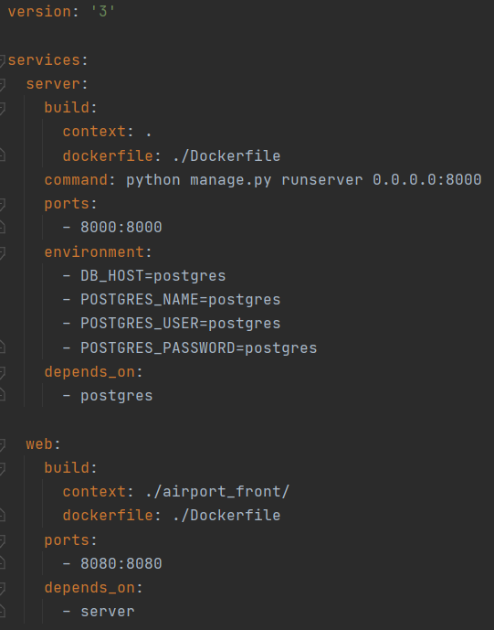
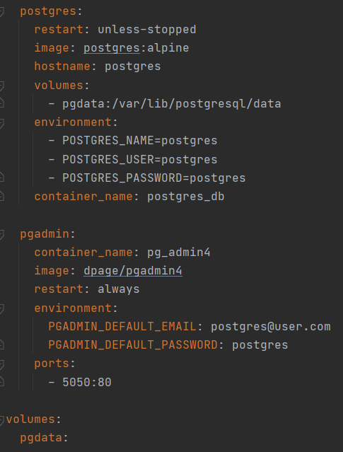
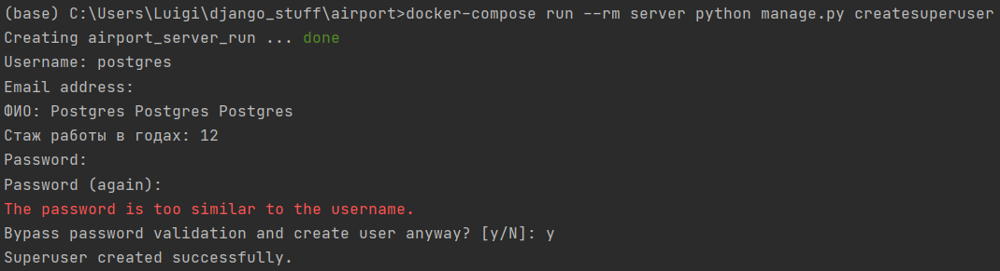
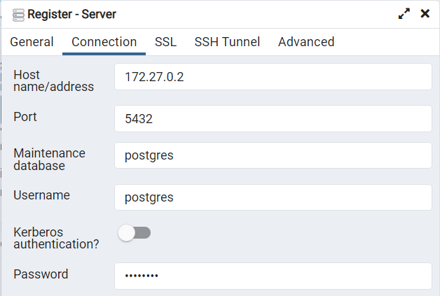

2. Оркестрация средствами Docker-compose.
Задание:
- Реализовать работу в оркестре всех сервисов из 3 и 4 работы из курса "Web-программирование".
- Выполнить команды необходимые для того, чтобы добавить нового пользователя в БД Postgres. С попощью пользователя должна быть возможность подключиться к БД из приложения для работы с БД.
Docker-compose:  
Миграция на БД Postgres:

Создание суперпользователя: 
Подключение к БД с помощью pgAdmin4:
